# A tibble: 1 × 1
lambda_guerrero
<dbl>
1 1.85Análise da série temporal de voos
\[ \begin{aligned} &(1-\phi_1 B)(1-\Phi_1 B^{12}-\Phi_2 B^{24})(1-B)(1-B^{12})\,y_t \\[2pt] &= (1+\theta_1 B)(1+\Theta_1 B^{12})\,\varepsilon_t \end{aligned} \]
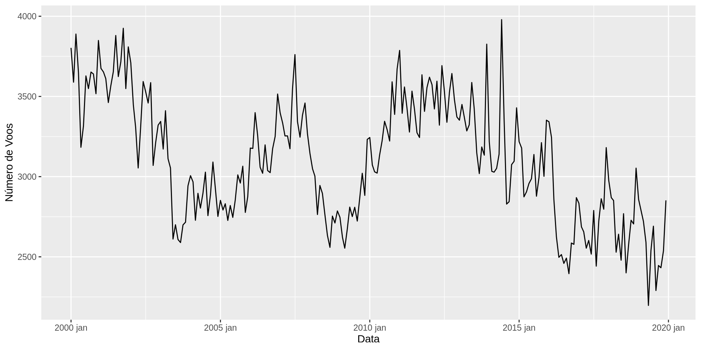
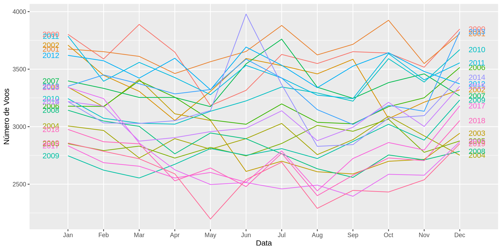
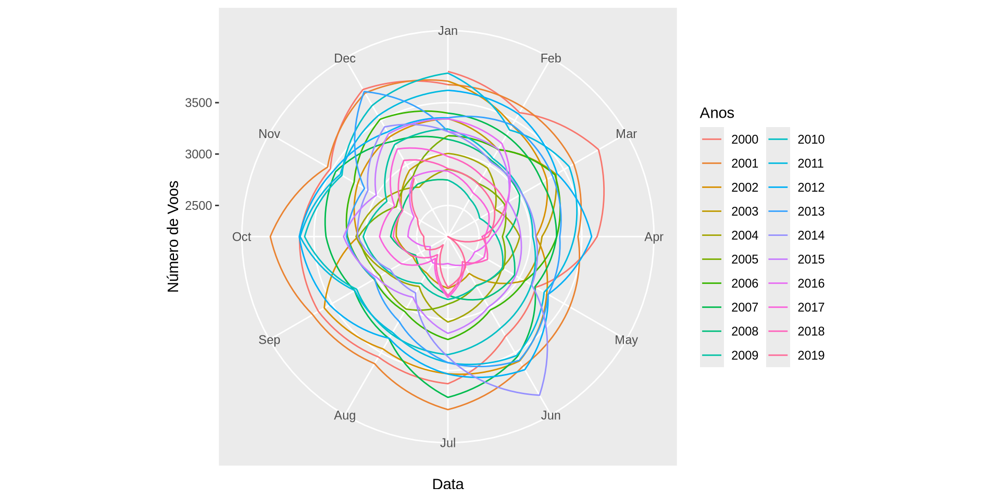
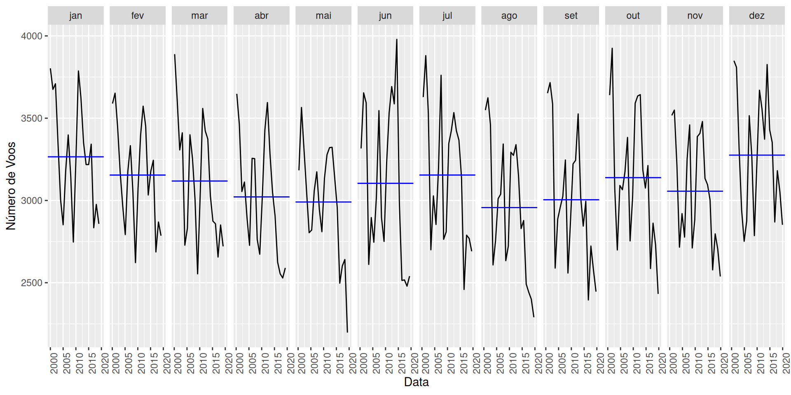
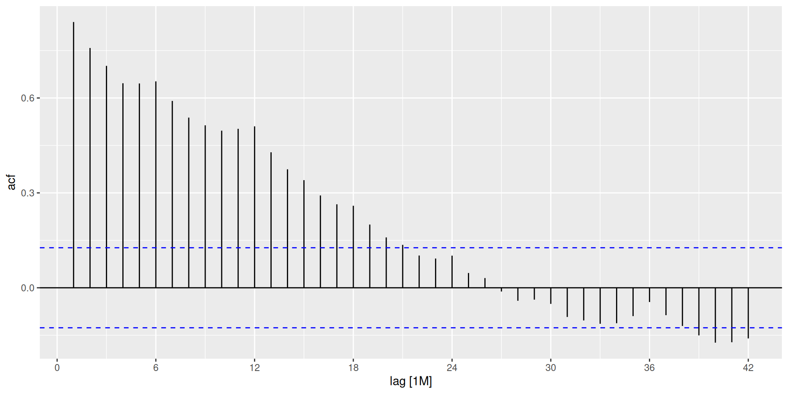
# A tibble: 1 × 1
lambda_guerrero
<dbl>
1 1.85 [,1]
mna ETS(M,N,A)
mnm ETS(M,N,M)
ana ETS(A,N,A)# A tibble: 3 × 4
.model AICc BIC sigma2
<chr> <dbl> <dbl> <dbl>
1 mna 3399. 3448. 0.00296
2 ana 3411. 3460. 30814.
3 mnm 3438. 3486. 0.00351# A tibble: 3 × 3
.model .type RMSE
<chr> <chr> <dbl>
1 mnm Test 244.
2 ana Test 333.
3 mna Test 350.# A tibble: 1 × 2
nsdiffs ndiffs
<int> <int>
1 0 1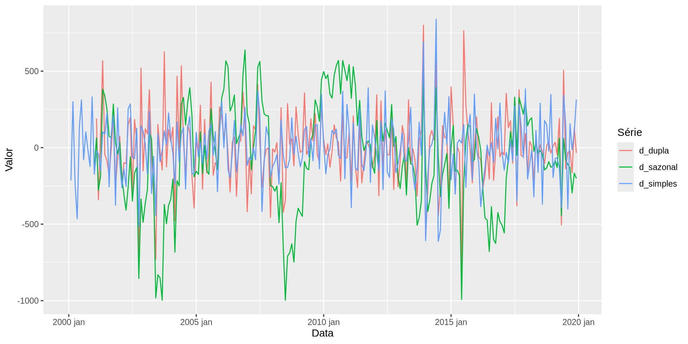
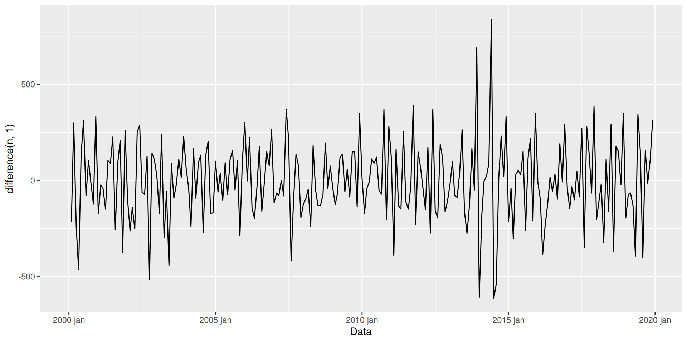
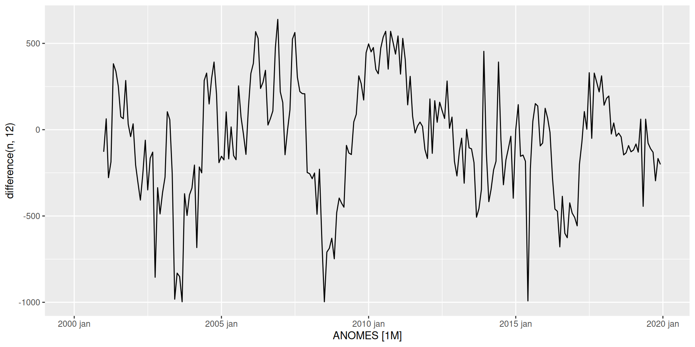
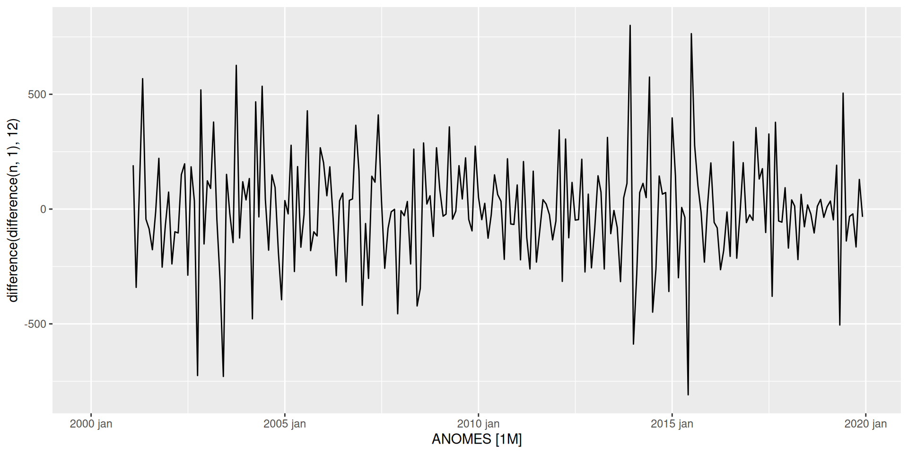
| Transformação | d | D | ADF (p-valor) | KPSS | KPSS crít. 5% |
|---|---|---|---|---|---|
| Série Original | 0 | 0 | 0.391 | 1.204 | 0.463 |
| Diferença Simples | 1 | 0 | 0.010 | 0.040 | 0.463 |
| Diferença Sazonal | 0 | 1 | 0.081 | 0.158 | 0.463 |
| Diferença Dupla | 1 | 1 | 0.010 | 0.022 | 0.463 |
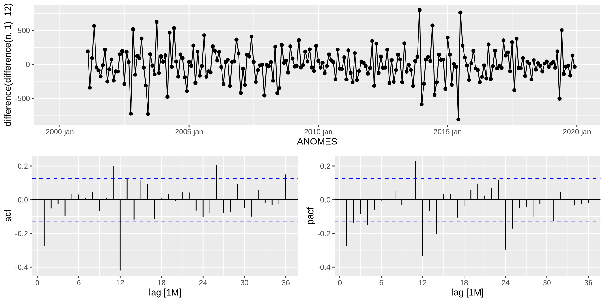
# A tibble: 9 × 3
.model ordem RMSE
<chr> <chr> <dbl>
1 arima1 ARIMA(1,1,1)(2,1,1)[12] 224.
2 arima3 ARIMA(1,1,1)(2,0,1)[12] 239.
3 best2ad ARIMA(2,1,2)(2,1,2)[12] 256.
4 auto3 ARIMA(0,1,2)(2,1,2)[12] 258.
5 arima2 ARIMA(0,1,1)(2,1,1)[12] 265.
6 auto1 ARIMA(1,1,1)(2,0,0)[12] 324.
7 best ARIMA(2,0,1)(2,1,2)[12] 342.
8 best2 ARIMA(2,0,2)(2,1,2)[12] 342.
9 auto2 ARIMA(0,1,2)(1,0,0)[12] 406.# A tibble: 9 × 4
.model ordem AICc BIC
<chr> <chr> <dbl> <dbl>
1 auto3 ARIMA(0,1,2)(2,1,2)[12] 2707. 2730.
2 arima1 ARIMA(1,1,1)(2,1,1)[12] 2709. 2728.
3 best2ad ARIMA(2,1,2)(2,1,2)[12] 2709. 2738.
4 arima2 ARIMA(0,1,1)(2,1,1)[12] 2711. 2727.
5 best ARIMA(2,0,1)(2,1,2)[12] 2718. 2744.
6 best2 ARIMA(2,0,2)(2,1,2)[12] 2720. 2749.
7 auto1 ARIMA(1,1,1)(2,0,0)[12] 2869. 2886.
8 auto2 ARIMA(0,1,2)(1,0,0)[12] 2870. 2883.
9 arima3 ARIMA(1,1,1)(2,0,1)[12] 5149. 5169.\[ \begin{aligned} &(1-\hat\phi_1 B)(1-\hat\Phi_1 B^{12}-\hat\Phi_2 B^{24})(1-B)(1-B^{12})\,y_t \\[2pt] &= (1+\hat\theta_1 B)(1+\hat\Theta_1 B^{12})\,\hat\varepsilon_t \end{aligned} \]
# A tibble: 2 × 3
.model .type RMSE
<chr> <chr> <dbl>
1 arima1 Test 224.
2 mnm Test 244.# A tibble: 5 × 6
.model term estimate std.error statistic p.value
<chr> <chr> <dbl> <dbl> <dbl> <dbl>
1 arima1 ar1 0.337 0.139 2.44 1.57e- 2
2 arima1 ma1 -0.671 0.106 -6.33 1.52e- 9
3 arima1 sar1 -0.0319 0.100 -0.319 7.50e- 1
4 arima1 sar2 -0.146 0.0937 -1.56 1.21e- 1
5 arima1 sma1 -0.794 0.0888 -8.94 2.43e-16\[ \begin{aligned} &(1 - 0.337 B)(1 + 0.0319 B^{12} + 0.146 B^{24})(1-B)(1-B^{12})\,y_t = \\ &\quad (1 - 0.671 B)(1 - 0.794 B^{12})\,\hat\varepsilon_t \end{aligned} \]
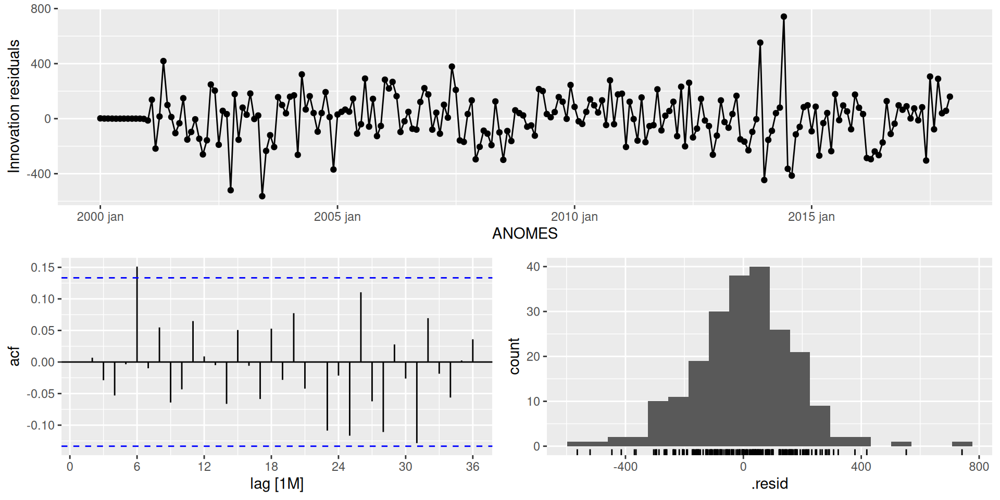
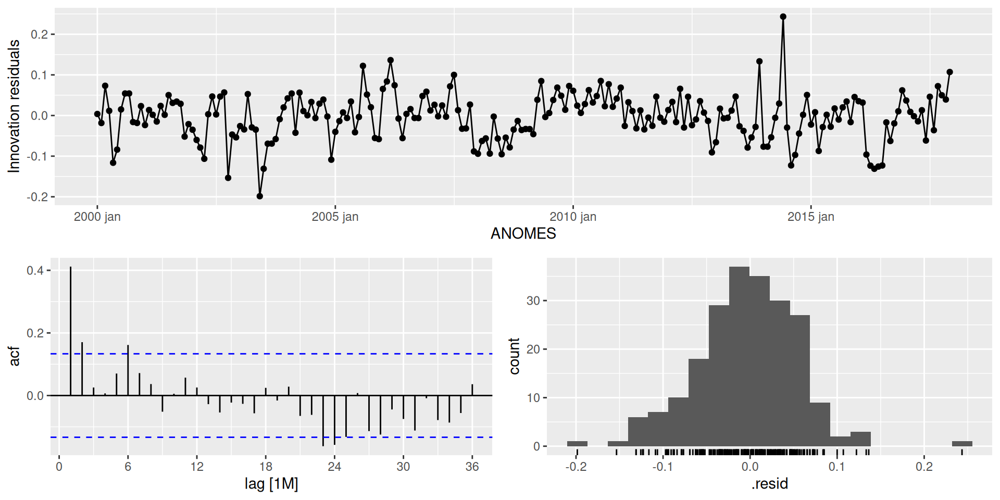
# A tibble: 1 × 3
.model lb_stat lb_pvalue
<chr> <dbl> <dbl>
1 arima1 17.2 0.579
Shapiro-Wilk normality test
data: (augment(melhor_modelo_arima))$.innov
W = 0.97967, p-value = 0.003291# A tibble: 1 × 3
.model lb_stat lb_pvalue
<chr> <dbl> <dbl>
1 mnm 70.4 0.000000576
Shapiro-Wilk normality test
data: (augment(melhor_modelo_ets))$.innov
W = 0.98121, p-value = 0.005599\[ \begin{aligned} y_t = {}&(1+\phi_1)y_{t-1} - \phi_1 y_{t-2} + (1+\Phi_1) y_{t-12} \\ &- (1+\phi_1+\Phi_1+\phi_1\Phi_1) y_{t-13} + (\phi_1+\phi_1\Phi_1) y_{t-14} \\ &- \Phi_1 y_{t-24} + (\Phi_1+\phi_1\Phi_1) y_{t-25} - \phi_1\Phi_1 y_{t-26} \\ &+ \varepsilon_t + \theta_1\varepsilon_{t-1} + \Theta_1\varepsilon_{t-12} + \theta_1\Theta_1\varepsilon_{t-13} \end{aligned} \]
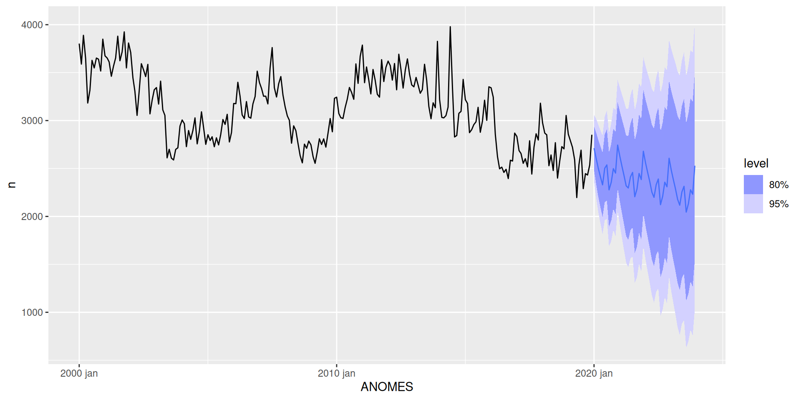
Livro-Texto Base: HYNDMAN, Rob J.; ATHANASOPOULOS, George. Forecasting: principles and practice. 3. ed. Melbourne: OTexts, 2021. Disponível em: https://otexts.com/fpp3/.
Material Didático: SIROKY, Andressa. Análise de Séries Temporais: Notas de aula e slides da disciplina. Natal: Departamento de Estatística, Universidade Federal do Rio Grande do Norte (UFRN), 2026.
Fonte de Dados: AGÊNCIA NACIONAL DE AVIAÇÃO CIVIL (ANAC). Dados Estatísticos do Transporte Aéreo. Brasília: ANAC, 2024. Disponível em: https://sistemas.anac.gov.br/dadosabertos/.